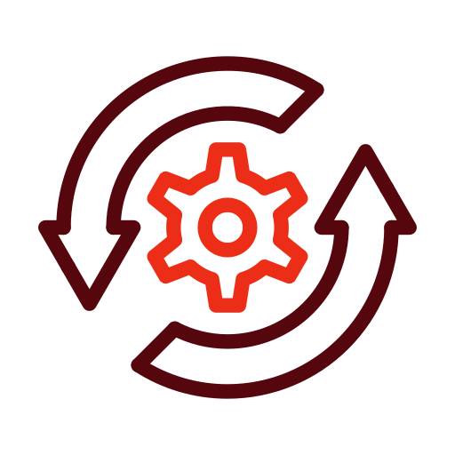

<!-- Barra lateral -->
<div class="sidebar">
    
    
    
    
    
</div>

<!-- Barra superior -->
<div class="topbar">
    <span class="datetime" id="datetime"></span>
    <div class="icons">
        <i id="signal-icon" class="fas fa-signal" title="Señal de Red"></i>
        <i id="wifi-icon" class="fas fa-wifi" title="WiFi"></i>
        <i id="battery-icon" class="fas fa-battery-full" title="Energia"></i>
        <span id="battery-percentage">100%</span>
    </div>
</div>

<!-- Menú contextual -->
<div id="context-menu">
    <ul>
        <li onclick="openWindow('cv')"><i class="fas fa-user"></i> Abrir Currículum</li>
        <li onclick="openWindow('projects')"><i class="fas fa-folder-open"></i> Abrir Proyectos</li>
        <li onclick="openWindow('portfolio')"><i class="fas fa-briefcase"></i> Abrir Portafolio</li>
        <li onclick="openWindow('settings')"><i class="fas fa-cog"></i> Abrir Configuración</li>
    </ul>
</div>
